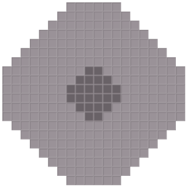
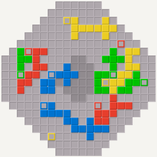

Callisto ist ein weiteres Brettspiel ähnlich wie Blokus. Das Spielbrett ist vom klassischen 20×20-Blokus-Spielbrett abgeleitet, indem die Ecken entfernt werden, sodass ein Achteck verbleibt mit einer oberen Kantenlänge von sechs. Die Spielsteine sind eine Untermenge der Polyominos bis zur Größe fünf. Sie beinhalten drei 1×1-Spielsteine pro Spieler, die eine besondere Rolle spielen.
Die 1×1-Spielsteine dürfen überall auf dem Spielbrett gesetzt werden außer im Zentrum des Spielbretts. Das Zentrums besteht aus einem Achteck mit Breite sechs und oberer Kantenlänge zwei. Die ersten zwei Züge eines Spielers müssen einen 1×1-Spielstein benutzen, der dritte 1×1-Spielstein kann jederzeit später gespielt werden.

Alle größeren Spielsteine dürfen überall auf dem Brett gesetzt werden, müssen aber einen existierenden Spielstein der selben Farbe Kante an Kante berühren.

Die Punktzahl einer Farbe ist die Anzahl der Quadrate auf dem Brett, die von der Farbe bedeckt sind, wobei die 1×1-Spielsteine nicht gezählt werden. Bonuspunkte werden nicht verwendet. Anders als in Blokus werden Unentschieden zugunsten des Spielers aufgelöst, der später begonnen hat.
Das Spiel kann mit weniger als vier Spielern gespielt werden, indem ein kleineres Spielbrett verwendet wird. Für drei Spieler ist das Brett ein Achteck mit Breite 20 und obererer Kantenlänge zwei. Für zwei Spieler ist das Brett ein Achteck mit Breite 16 und obererer Kantenlänge zwei. Die Größe des Zentrums bleibt gleich. Zusätzlich zur Standardvariante für zwei Spieler unterstützt Pentobi auch eine Spielvariante für zwei Spieler wie in Blokus, in der jeder Spieler zwei Farben spielt.